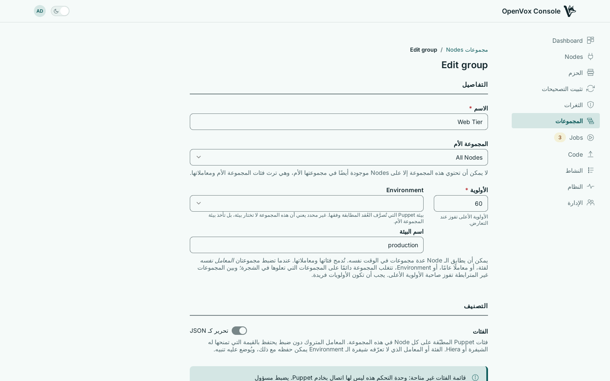

الاستخدام
تصنيف الـ Nodes
قرّر الفئات والمعاملات والـ Environment التي يحصل عليها كل Node، بشجرة من مجموعات الـ Nodes تُطابَق بالـ Facts أو تُثبَّت بالاسم.
يسأل openvoxserver وحدة التحكم عمّا ينبغي أن يكون عليه كل Node: أي الفئات يتضمن، وبأي المعاملات، ومن أي Environment يأتي الكود الخاص به. وتجيب وحدة التحكم من مجموعات الـ Nodes الخاصة بها. ولا يصل التصنيف إلى openvoxserver إلا بعد ربطه، وهو ما يغطيه دليلا التثبيت كلاهما.
يتطلب عرض المجموعات الإذن classifier:read؛ ويتطلب إنشاؤها وتغييرها وحذفها classifier:write.
تشكّل المجموعات شجرة
لكل مجموعة مجموعة أم. وفي القمة توجد All Nodes، وهي مجموعة مدمجة ينتمي إليها كل Node. لا يمكنك حذفها أو إعادة تسميتها أو نقلها، وليست لها قاعدة ولا Nodes مثبّتة، لكن يمكنك منحها فئات ومعاملات وEnvironment، فتنطبق عندئذ على الأسطول بأكمله.
لا يمكن للمجموعة أن تحتوي إلا على Nodes موجودة أيضًا في المجموعة الأم. لذا فالمجموعة تحت Linux Servers لا تلتقط أبدًا Node يعمل بـ Windows، أيًّا كان ما تقوله قاعدتها، وتكون Nodes المجموعة دائمًا مجموعة جزئية من Nodes المجموعة الأم. وتوضع المجموعة الجديدة مباشرة تحت All Nodes ما لم تختر مجموعة أمًّا أخرى.
لا يمكن نقل مجموعة تحت نفسها أو تحت إحدى المجموعات التي تحتها، ولا يمكن حذف مجموعة لا تزال تحتها مجموعات: انقل تلك أو احذفها أولًا.
ولا يمكن أيضًا حذف مجموعة ممنوح عليها دور، لأن ذلك سيسلب بصمت الوصول الذي يمنحه الدور. أزِل المجموعة من الدور أولًا، في صفحة الأدوار - راجع المستخدمون والأدوار والرموز.
كيف تقرّر المجموعة الـ Nodes التي تنطبق عليها
تنطبق المجموعة على Node حين يكون الـ Node في المجموعة الأم للمجموعة، وإما:
- يكون الـ Node مثبّتًا فيها بالاسم، أو
- تستوفي الـ Facts الخاصة بالـ Node قاعدة المطابقة للمجموعة: كل شروطها، أو أيًّا منها، بحسب ما ضُبطت عليه المجموعة.
المجموعة التي لا شروط لها ولا Nodes مثبّتة فيها لا تنطبق على أي Node إطلاقًا. فالقاعدة الفارغة لا تعني «الجميع» عن قصد، حتى لا تستولي مجموعة نصف مكتملة على الأسطول.
التثبيت يتجاوز قاعدة المجموعة نفسها، لا المجموعة الأم. فالـ Node المثبّت في مجموعة لا تحتويه مجموعتها الأم ليس في المجموعة، وتسرد صفحة المجموعة مثل هذه التثبيتات حتى لا يمر التثبيت عديم الأثر بصمت.
يقارن كل شرط Fact واحدًا بقيمة:
| المُعامل | يطابق عندما يكون الـ Fact |
|---|---|
= |
يساوي القيمة |
!= |
يختلف عن القيمة |
~ |
يطابق القيمة بوصفها تعبيرًا نمطيًا |
> < >= <= |
يقارن بتلك الطريقة، عدديًا حين يكون الطرفان عددين |
تُسمّى الـ Facts بمساراتها، مع نقاط للـ Facts المهيكلة: os.family وos.release.major وnetworking.domain.
أنشئ مجموعة
- افتح المجموعات وأنشئ مجموعة.
- سمّها، واختر مجموعتها الأم، واختر الـ Environment الخاص بها إن كان ينبغي أن تضبط واحدًا. الـ Environment قائمة منسدلة. يترك غير محدد (الذي يذكر ما ترثه المجموعة عندئذ من مجموعتها الأم) الاختيار للمجموعة الأم. وتُسرد تحته الـ Environments التي يُبلّغ عنها openvoxserver. ويفتح أخرى... حقلًا نصيًا لاسم غير مدرج بعد، مثل فرع أجريت له push للتو، أو حين يتعذّر تحميل القائمة.
- أضف الفئات، كلٌّ منها مع ما تحتاج إليه من معاملات، وأي معاملات النطاق الأعلى. راجع اختيار الفئات أدناه.
- ابنِ قاعدة المطابقة الخاصة بها، شرط واحد في كل صف: مسار Fact، ومُعامل، وقيمة. واختر ما إذا كان على الـ Node أن يستوفي كل الشروط أو أيًّا منها. ويرفض المحرّر حفظ شرط بلا مسار Fact، أو تعبير نمطي لا يُترجَم، ويُظهر الصف الخاطئ.
- ثبّت بالـ certname أي Nodes ينبغي أن تنتمي إلى المجموعة أيًّا كانت الـ Facts الخاصة بها.
- امنحها أولوية، ثم احفظ.


تعرض قائمة المجموعات الشجرة، كل مجموعة تحت مجموعتها الأم، مع عدد الـ Nodes التي تطابقها كلٌّ منها الآن، فتظهر فورًا القاعدة التي لا تطابق شيئًا، أو تطابق كل شيء.
يعرض تحرير كـ JSON القاعدة بصيغة JSON خام، للصق قاعدة أو لكتابة بنية لا يتيحها محرّر الصفوف. وفحوصه هي فحوص محرّر الصفوف: القاعدة المحفوظة بصيغة JSON، أو عبر الـ API، ذات مسار Fact فارغ أو تعبير نمطي معطوب تُقبَل، وببساطة لا تطابق شيئًا أبدًا.
اختيار الفئات
تقرأ وحدة التحكم من openvoxserver الفئات التي يعرّفها الكود الذي جرى له deploy، فتُختار فئات المجموعة ولا تُكتب.
- تحت الفئات، ابدأ الكتابة في إضافة فئة، واختر الفئة، وأضفها.
- لضبط أحد معاملاتها، اختره تحت ضبط معامل. ويلائم الحقل الذي يظهر نوعَ المعامل: اختيار لـ Boolean أو Enum، ورقم لـ Integer أو Float، ونص لـ String. وتعرض ملاحظته النوع والقيمة الافتراضية من الكود. وأي نوع آخر يُدخَل بصيغة JSON، لذا يحتاج النص إلى علامات اقتباس مزدوجة:
"value"،["a", "b"]. - احذف المعامل للإبقاء على القيمة التي يمنحها له الكود أو Hiera. وأزِل المعامل للعودة إلى ذلك.
تأتي الفئات من الـ Environment الخاص بالمجموعة: الخاص بها، وإلا فالخاص بأقرب مجموعة أم تضبط واحدًا، وإلا فـ production. وتذكر الصفحة أيّها، ومتى قُرئت القائمة. والـ Node الذي يطابق أيضًا مجموعة أخرى تضبط Environment مختلفًا يُجمَّع على ذلك الـ Environment، وهو ما لا تستطيع المجموعة معرفته.
يُعاد استخدام القائمة لمدة خمس دقائق وتُقرأ مجددًا بعد deploy للكود. ويقرؤها تحديث الفئات فورًا، ويحتاج إلى classifier:write.
يحتفظ openvoxserver بذاكرة مؤقتة خاصة به لكل Environment. وإذا كان مضبوطًا للاحتفاظ بالـ Environments إلى أجل غير مسمّى، كما هو الحال في صورة الحاوية، فإن الفئة التي يضيفها كود جديد لا تظهر حتى تُفرَغ تلك الذاكرة المؤقتة - وهو الإفراغ نفسه الذي يحتاج إليه الـ catalog لرؤية الكود الجديد. راجع التثبيت باستخدام الحاويات.
يعرض تحرير كـ JSON الفئات بصيغة JSON خام، للصقها.
فئات لا تطابق الكود
يمكن للمجموعة أن تذكر فئة لا يعرّفها الـ Environment، أو تضبط معاملًا لا تصرّح به الفئة، أو تعطي قيمة لا تلائم نوع المعامل. ويحدث ذلك حين تُعاد تسمية فئة أو تُزال في الكود، أو حين تُحفظ المجموعة قبل deploy الكود.
تَسِم صفحة المجموعة كلًّا منها، وتعرض قائمة المجموعات عدم تطابق الفئة على المجموعة. وهذه نصائح فقط:
- تُحفظ المجموعة كما هي. لا يُزال شيء ولا يتغيّر.
- تظل الـ Nodes تُصنَّف بالفئة. والـ Node الذي يحتاج الـ catalog الخاص به إلى فئة غير موجودة يفشل في التجميع، مع
Could not find class، حتى يتغيّر الكود أو المجموعة. - لا يُفحص إلا الأنواع التي تستطيع وحدة التحكم فحصها. والقيمة لأي نوع آخر لا تُوسَم أبدًا.
لا يُوسَم أي شيء بأنه مفقود حين يفشل تحليل أحد الـ manifests في الـ Environment، إذ قد تكون الفئة في ذلك الـ manifest. وتسرد الصفحة بدلًا من ذلك الـ manifests وأخطاءها.
حين تكون القائمة غير متاحة
تذكر الصفحة السبب، وتُكتب الفئات والمعاملات بالاسم. لا يُوسَم شيء، ويعمل الحفظ والتصنيف كالمعتاد. الأسباب:
- ليس لوحدة التحكم اتصال بـ openvoxserver. اضبط
CONSOLE_PUPPET_SERVER_URL. - لا يسمح openvoxserver لوحدة التحكم بقراءة الفئات. أضف القاعدة من دليل التثبيت: الحاويات أو الحزم.
- تعذّر الوصول إلى openvoxserver. إذا كانت القائمة قد قُرئت من قبل، تُعرض تلك القائمة السابقة، موسومةً بأنها قد تكون قديمة.
حين تتداخل المجموعات
الـ Node الذي يطابق عدة مجموعات يحصل على كل شيء منها جميعًا: كل فئة، وكل معامل. وبما أن الـ Node الموجود في مجموعة موجود أيضًا في كل مجموعة تعلوها، فإن المجموعة ترث كل ما تضبطه تلك المجموعات ولا تضبطه هي.
حين تضبط مجموعتان الشيء نفسه بشكل مختلف - معامل الفئة نفسه، أو معامل النطاق الأعلى نفسه، أو الـ Environment - تحسم الأمر قاعدتان، بهذا الترتيب:
- تتغلب المجموعة دائمًا على المجموعات التي تعلوها. فقيمة المجموعة الفرعية تتغلب على قيمة المجموعة الأم، والمجموعة الجدّة، وهكذا، أيًّا كانت أولوياتها.
- بين مجموعتين لا تعلو إحداهما الأخرى، تفوز الأولوية الأعلى.
وتُعدّ المجموعة أيضًا في مرتبة لا تقل عن مرتبة المجموعة الأم. خذ مجموعة أمًّا بأولوية 10، ومجموعتها الفرعية بأولوية 1، ومجموعة غير مرتبطة بأولوية 5، وكلها تطابق Node واحدًا. تتغلب الفرعية على الأم بموجب القاعدة الأولى، وتتغلب على المجموعة غير المرتبطة أيضًا، لأن مرتبتها تُحتسب 10: فتنقيح مجموعةٍ يتفوق على كل ما تتفوق عليه تلك المجموعة.
حين تتجاوز مجموعة فرعية أولوية أعلى
إذا ضبطت مجموعة شيئًا ما بشكل مختلف عن مجموعة تعلوها ذات أولوية أعلى، تظل قيمة المجموعة الفرعية هي المستخدمة، لكن الأولويات وحدها كانت ستقول غير ذلك. وتخبرك وحدة التحكم بذلك: إذ تذكر صفحة المجموعة المجموعةَ الأم والقيم المعنية حين تفتحها أو تحفظها، وتَسِم قائمة المجموعات المجموعة بـ تتجاوز الأولوية، ويُدوَّن التغيير في صفحة النشاط. إنه تحذير لا خطأ. لا يُرفض شيء، وتُصنَّف الـ Nodes كالمعتاد. ولإزالته، امنح المجموعة الفرعية الأولوية الأعلى أو أزِل القيمة من إحدى المجموعتين.
القيم المضبوطة على All Nodes لا تُطلقه أبدًا: إذ يُتوقع من كل مجموعة أن تتجاوزها.
ضبط بيانات التكوين
بيانات التكوين بيانات يقرؤها الكود الخاص بك باستخدام lookup(): قيمة لـ ntp::servers أو profile::dns::resolvers أو أي مفتاح Hiera آخر. وضبطها على مجموعة Nodes يغيّرها لكل Node في المجموعة دون commit أو deploy للكود.
- افتح المجموعة، وتحت الفئات افتح بيانات التكوين (JSON).
- اكتب كائن JSON من مفاتيح وقيم، على سبيل المثال
{"ntp::servers": ["0.pool.ntp.org"], "dns::timeout": 5}. ويمكن أن تكون القيمة أي JSON: سلسلة نصية، أو رقمًا، أو قيمة منطقية، أو قائمة، أو كائنًا، أوnull. - احفظ المجموعة. تلتقطها الـ Nodes عند تشغيل Puppet التالي لها.
المفتاح حتى 255 حرفًا من الأحرف والأرقام و_ : . -. وتحمل المجموعة حتى 1000 مفتاح، كل قيمة حتى 64 KiB. ويُرفض المفتاح lookup_options: فهو الطريقة التي يضبط بها Hiera سلوك الدمج، وهو ما لا تتيحه بيانات التكوين.
أي قيمة يحصل عليها الـ Node
تُجمع البيانات من كل مجموعة يوجد فيها الـ Node بالقاعدتين نفسيهما اللتين تجمعان معاملات الفئات (راجع حين تتداخل المجموعات): تتغلب المجموعة على المجموعات التي تعلوها، وبين المجموعات غير المترابطة تفوز الأولوية الأعلى. والمفتاح الذي تضبطه المجموعة الفائزة يحل محل المفتاح نفسه من المجموعات الأخرى بالكامل: فالمجموعتان اللتان تضبطان كلتاهما app::opts على كائن لا تُدمج كائناتهما مفتاحًا بمفتاح.
بيانات وحدة التحكم تتغلب على مستودع التحكم
حين يُضبط مفتاح هنا وفي بيانات Hiera في مستودع التحكم لديك معًا، تُستخدم قيمة وحدة التحكم. أما المفتاح الذي لا تضبطه وحدة التحكم فيُعثر عليه في مستودع التحكم كما كان من قبل. لذا فبيانات التكوين هي المكان المناسب لقيمة تريد تجاوزها لكل مجموعة، ويبقى مستودع التحكم المكان لكل ما عدا ذلك.
ليست للأسرار
تُخزَّن بيانات التكوين نصًّا عاديًا وتُعرض لكل من يستطيع رؤية مجموعات الـ Nodes (classifier:read). لا تضع فيها كلمات مرور أو مفاتيح. وتسجّل صفحة النشاط وسجل التدقيق المفاتيح التي تغيّرت، لا قيمها أبدًا.
إذا فشل تشغيل Node
يسأل openvoxserver وحدة التحكم عن بيانات الـ Node في كل مرة يُجمِّع فيها catalog. وإذا لم تستطع وحدة التحكم الإجابة، يفشل التجميع مع خطأ يذكر وحدة التحكم، بدل بناء catalog من قيم مفقودة. وتبيّن أدلة التثبيت كيف يُهيَّأ الخادم ليسأل.
تحقّق مما يحصل عليه الـ Node
تسرد صفحة المجموعة الـ Nodes التي تطابقها الآن. وما يحصل عليه الـ Node في النهاية هو دمج كل المجموعات المطابقة، والمكان الوحيد الذي يعرض تلك الإجابة كاملة هو enc-bridge نفسه: اسأله على مضيف openvoxserver، كما تبيّن أدلة التثبيت، فيطبع بالضبط ما يُقال لـ openvoxserver. أما بيانات التكوين الخاصة بالـ Node فمنفصلة: يُرجعها GET /api/v1/enc/<certname>/data، بالرمز نفسه.
يسري التصنيف عند تشغيل Puppet التالي للـ Node. ولتطبيقه الآن، ابدأ تشغيلًا من صفحة المجموعة، فينفّذ Puppet على كل Node تطابقه المجموعة؛ راجع تشغيل الـ Jobs.
يُسجَّل كل تغيير على مجموعة في صفحة النشاط، مع من أجراه.
الترقية من إصدار لا يتضمن الشجرة
لا تغيّر الترقية تصنيف أي Node. تصبح كل مجموعة موجودة مجموعة فرعية مباشرة لـ All Nodes، وتحتفظ بقاعدتها وتثبيتاتها وأولويتها، وتطابق بناءً على كل شروطها كما في السابق.
إذا كانت لديك بالفعل مجموعة باسم «All Nodes»، فإنها تُعاد تسميتها إلى All Nodes (previous) وتستمر تمامًا كما كانت، بقاعدتها الخاصة. ولا تتحول إلى المجموعة المدمجة، لأن ذلك سيطبّق فئاتها على Nodes لم تطابقها قاعدتها. وبعد أن تتحقق منها، يمكنك نقل فئاتها إلى All Nodes المدمجة وحذفها.
إذا كنت تشغّل عدة مثيلات من وحدة التحكم، فأكمل ترقيتها كلها قبل أن تضع مجموعة تحت أخرى. فالمثيل الذي لا يزال على الإصدار القديم يتجاهل المجموعات الأم وسيصنّف بالأولوية وحدها. راجع تشغيل مزيد من المثيلات.